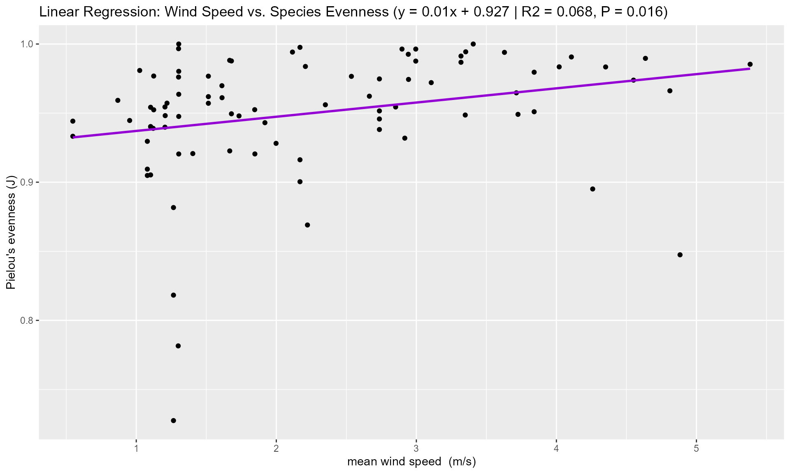
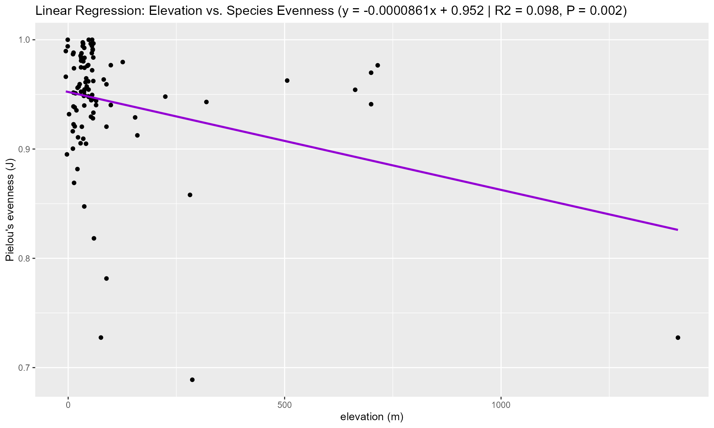

Analyzing Diversity-Environment Relationships
3-divstats_environment.Rmd
library(DivInsight)
#> Warning: replacing previous import 'dplyr::combine' by 'gridExtra::combine' when loading 'DivInsight'
data("Singapore_clst")
data("Malaysia_clst")
library(dplyr)
#>
#> Attaching package: 'dplyr'
#> The following objects are masked from 'package:stats':
#>
#> filter, lag
#> The following objects are masked from 'package:base':
#>
#> intersect, setdiff, setequal, union
library(gridExtra)
#>
#> Attaching package: 'gridExtra'
#> The following object is masked from 'package:dplyr':
#>
#> combine
library(ggplot2)Introduction
The DivInsight package can be used to repurpose
historical occurrence taxon data in order to both generate diversity
statistics and query environmental data for different dates and
locations.
Included in the package are ‘clusterised objects’ named
Singapore_clst and Malaysia_clst. These
objects contain clusters of data for the taxon ‘Plantae’ at the Kingdom
level from Singapore and Malaysia. This data was obtained by querying
data from the Global Biodiversity Information Facility (GBIF) database
using the rgbif package then organised into data clusters
by using the clusterise_sites() function. Each data cluster
can be considered a site, and in this instance, the function was set to
form clusters to have a size of at least 30 observations and a radius of
5000 metres.
View data clusters for the first three sites
When clusterise_sites() is used, metadata for each site
is generated. Each row of the metadata has information for each
site/cluster. This includes centred coordinates, the date of
observations, and a site group label to represent groups of sites that
are from different radii.
Singapore_clst[[1]][1:3]
#> $`2023-06-08.1`
#> # A tibble: 36 × 195
#> key scientificName decimalLatitude decimalLongitude issues datasetKey publishingOrgKey installationKey hostingOrganizationKey publishingCountry protocol lastCrawled lastParsed crawlId basisOfRecord occurrenceStatus taxonKey kingdomKey phylumKey classKey orderKey familyKey genusKey acceptedTaxonKey acceptedScientificName kingdom phylum order family genus genericName taxonRank taxonomicStatus iucnRedListCategory continent distanceFromCentroid…¹ year month day eventDate lastInterpreted license identifier facts relations isInCluster recordedBy geodeticDatum class countryCode recordedByIDs identifiedByIDs country identifier.1 recordNumber http...unknown.org.t…² taxonConceptID identificationVerifi…³ gbifID occurrenceID taxonRemarks name speciesKey species specificEpithet http...unknown.org.s…⁴ vernacularName dateIdentified coordinateUncertaint…⁵ stateProvince modified references datasetName identifiedBy rightsHolder http...unknown.org.n…⁶ verbatimEventDate verbatimLocality
#> <chr> <chr> <dbl> <dbl> <chr> <chr> <chr> <chr> <chr> <chr> <chr> <chr> <chr> <int> <chr> <chr> <int> <int> <int> <int> <int> <int> <int> <int> <chr> <chr> <chr> <chr> <chr> <chr> <chr> <chr> <chr> <chr> <chr> <dbl> <int> <int> <int> <chr> <chr> <chr> <chr> <chr> <chr> <lgl> <chr> <chr> <chr> <chr> <chr> <chr> <chr> <chr> <chr> <chr> <chr> <chr> <chr> <chr> <chr> <chr> <int> <chr> <chr> <chr> <chr> <chr> <dbl> <chr> <chr> <chr> <chr> <chr> <chr> <chr> <chr> <chr>
#> 1 4138612218 Alstonia angustifo… 1.36 104. cdc,c… 50c9509d-… 28eb1a3f-1c15-4… 997448a8-f762-… 28eb1a3f-1c15-4a95-93… US DWC_ARC… 2023-09-05… 2023-09-0… 394 HUMAN_OBSERV… PRESENT 8050421 6 7707728 220 412 6701 8412045 8050421 Alstonia angustifolia… Plantae Trach… Gent… Apocy… Alst… Alstonia SPECIES ACCEPTED LC ASIA 729. 2023 6 8 2023-06-… 2023-09-06T14:… http:/… 169069030 none none FALSE mapoflife… WGS84 Magn… SG none none Singap… 169069030 NA NA NA NA 41386… https://www… NA Alst… 8050421 Alston… angustifolia NA NA 2023-06-23T21… NA North 2023-06… https://w… iNaturalis… mapoflife_r… mapoflife_r… mapoflife_rapidassess… 2023-06-08 08:04… Central Catchme…
#> 2 4138314230 Kunstleria ridleyi… 1.36 104. cdc,c… 50c9509d-… 28eb1a3f-1c15-4… 997448a8-f762-… 28eb1a3f-1c15-4a95-93… US DWC_ARC… 2023-09-05… 2023-09-0… 394 HUMAN_OBSERV… PRESENT 5354473 6 7707728 220 1370 5386 2958161 5354473 Kunstleria ridleyi Pr… Plantae Trach… Faba… Fabac… Kuns… Kunstleria SPECIES ACCEPTED NE ASIA 754. 2023 6 8 2023-06-… 2023-09-06T14:… http:/… 169069075 none none FALSE mapoflife… WGS84 Magn… SG none none Singap… 169069075 NA NA NA NA 41383… https://www… NA Kuns… 5354473 Kunstl… ridleyi NA NA 2023-06-23T21… NA North 2023-06… https://w… iNaturalis… mapoflife_r… mapoflife_r… mapoflife_rapidassess… 2023-06-08 08:39… Central Catchme…
#> 3 4138576723 Uncaria cordata (L… 1.36 104. cdc,c… 50c9509d-… 28eb1a3f-1c15-4… 997448a8-f762-… 28eb1a3f-1c15-4a95-93… US DWC_ARC… 2023-09-05… 2023-09-0… 394 HUMAN_OBSERV… PRESENT 5338120 6 7707728 220 412 8798 2906635 5338120 Uncaria cordata (Lour… Plantae Trach… Gent… Rubia… Unca… Uncaria SPECIES ACCEPTED NE ASIA 709. 2023 6 8 2023-06-… 2023-09-06T14:… http:/… 169069113 none none FALSE mapoflife… WGS84 Magn… SG none none Singap… 169069113 NA NA NA NA 41385… https://www… NA Unca… 5338120 Uncari… cordata NA NA 2023-06-23T21… NA North 2023-06… https://w… iNaturalis… mapoflife_r… mapoflife_r… mapoflife_rapidassess… 2023-06-08 08:35… Central Catchme…
#> 4 4138298998 Bridelia stipulari… 1.36 104. cdc,c… 50c9509d-… 28eb1a3f-1c15-4… 997448a8-f762-… 28eb1a3f-1c15-4a95-93… US DWC_ARC… 2023-09-05… 2023-09-0… 394 HUMAN_OBSERV… PRESENT 3076290 6 7707728 220 1414 8807 7729911 3076290 Bridelia stipularis (… Plantae Trach… Malp… Phyll… Brid… Bridelia SPECIES ACCEPTED LC ASIA 752. 2023 6 8 2023-06-… 2023-09-06T14:… http:/… 169069150 none none FALSE mapoflife… WGS84 Magn… SG none none Singap… 169069150 NA NA NA NA 41382… https://www… NA Brid… 3076290 Bridel… stipularis NA NA 2023-06-23T21… NA North 2023-06… https://w… iNaturalis… mapoflife_r… mapoflife_r… mapoflife_rapidassess… 2023-06-08 15:09… Central Catchme…
#> 5 4138739489 Plectocomia elonga… 1.36 104. cdc,c… 50c9509d-… 28eb1a3f-1c15-4… 997448a8-f762-… 28eb1a3f-1c15-4a95-93… US DWC_ARC… 2023-09-05… 2023-09-0… 394 HUMAN_OBSERV… PRESENT 2739260 6 7707728 196 552 7681 2739239 2739260 Plectocomia elongata … Plantae Trach… Arec… Areca… Plec… Plectocomia SPECIES ACCEPTED NE ASIA 662. 2023 6 8 2023-06-… 2023-09-06T14:… http:/… 169069163 none none FALSE mapoflife… WGS84 Lili… SG none none Singap… 169069163 NA NA NA NA 41387… https://www… NA Plec… 2739260 Plecto… elongata NA NA 2023-06-23T21… NA North 2023-06… https://w… iNaturalis… mapoflife_r… mapoflife_r… mapoflife_rapidassess… 2023-06-08 08:23… Central Catchme…
#> 6 4138232956 Pellacalyx saccard… 1.36 104. cdc,c… 50c9509d-… 28eb1a3f-1c15-4… 997448a8-f762-… 28eb1a3f-1c15-4a95-93… US DWC_ARC… 2023-09-05… 2023-09-0… 394 HUMAN_OBSERV… PRESENT 3874243 6 7707728 220 1414 6671 7273576 3874243 Pellacalyx saccardian… Plantae Trach… Malp… Rhizo… Pell… Pellacalyx SPECIES ACCEPTED LC ASIA 714. 2023 6 8 2023-06-… 2023-09-06T14:… http:/… 169069257 none none FALSE mapoflife… WGS84 Magn… SG none none Singap… 169069257 NA NA NA NA 41382… https://www… NA Pell… 3874243 Pellac… saccardianus NA NA 2023-06-23T21… NA North 2023-06… https://w… iNaturalis… mapoflife_r… mapoflife_r… mapoflife_rapidassess… 2023-06-08 10:45… Central Catchme…
#> 7 4400307433 Drepananthus ramul… 1.36 104. cdc,c… 50c9509d-… 28eb1a3f-1c15-4… 997448a8-f762-… 28eb1a3f-1c15-4a95-93… US DWC_ARC… 2023-09-05… 2023-09-0… 394 HUMAN_OBSERV… PRESENT 3158353 6 7707728 220 718 9291 6027805 3158353 Drepananthus ramulifl… Plantae Trach… Magn… Annon… Drep… Drepananth… SPECIES ACCEPTED NE ASIA 719. 2023 6 8 2023-06-… 2023-09-06T14:… http:/… 169070304 none none FALSE mapoflife… WGS84 Magn… SG none none Singap… 169070304 NA NA NA NA 44003… https://www… NA Drep… 3158353 Drepan… ramuliflorus NA NA 2023-06-23T21… NA North 2023-08… https://w… iNaturalis… mapoflife_r… mapoflife_r… mapoflife_rapidassess… 2023-06-08 08:18… Central Catchme…
#> 8 4165634419 Rourea aspleniifol… 1.36 104. cdc,c… 50c9509d-… 28eb1a3f-1c15-4… 997448a8-f762-… 28eb1a3f-1c15-4a95-93… US DWC_ARC… 2023-09-05… 2023-09-0… 394 HUMAN_OBSERV… PRESENT 3686379 6 7707728 220 7224021 6669 3032534 3686379 Rourea aspleniifolia … Plantae Trach… Oxal… Conna… Rour… Rourea SPECIES ACCEPTED NE ASIA 739. 2023 6 8 2023-06-… 2023-09-06T14:… http:/… 169070542 none none FALSE mapoflife… WGS84 Magn… SG none none Singap… 169070542 NA NA NA NA 41656… https://www… NA Rour… 3686379 Rourea… aspleniifolia NA NA 2023-06-24T00… NA North 2023-07… https://w… iNaturalis… mapoflife_r… mapoflife_r… mapoflife_rapidassess… 2023-06-08 15:45… Central Catchme…
#> 9 4153863559 Rhodamnia cinerea … 1.36 104. cdc,c… 50c9509d-… 28eb1a3f-1c15-4… 997448a8-f762-… 28eb1a3f-1c15-4a95-93… US DWC_ARC… 2023-09-05… 2023-09-0… 394 HUMAN_OBSERV… PRESENT 3185983 6 7707728 220 690 5014 3185949 3185983 Rhodamnia cinerea Jack Plantae Trach… Myrt… Myrta… Rhod… Rhodamnia SPECIES ACCEPTED LC ASIA 726. 2023 6 8 2023-06-… 2023-09-06T14:… http:/… 169070938 none none FALSE mapoflife… WGS84 Magn… SG none none Singap… 169070938 NA NA NA NA 41538… https://www… NA Rhod… 3185983 Rhodam… cinerea NA NA 2023-06-23T21… NA North 2023-07… https://w… iNaturalis… mapoflife_r… mapoflife_r… mapoflife_rapidassess… 2023-06-08 09:12… Central Catchme…
#> 10 4138062757 Clausena excavata … 1.36 104. cdc,c… 50c9509d-… 28eb1a3f-1c15-4… 997448a8-f762-… 28eb1a3f-1c15-4a95-93… US DWC_ARC… 2023-09-05… 2023-09-0… 394 HUMAN_OBSERV… PRESENT 5834596 6 7707728 220 933 2396 3190412 5834596 Clausena excavata Bur… Plantae Trach… Sapi… Rutac… Clau… Clausena SPECIES ACCEPTED NE ASIA 737. 2023 6 8 2023-06-… 2023-09-06T14:… http:/… 169071487 none none FALSE mapoflife… WGS84 Magn… SG none none Singap… 169071487 NA NA NA NA 41380… https://www… NA Clau… 5834596 Clause… excavata NA NA 2023-06-23T21… NA North 2023-06… https://w… iNaturalis… mapoflife_r… mapoflife_r… mapoflife_rapidassess… 2023-06-08 18:50… Central Catchme…
#> # ℹ 26 more rows
#> # ℹ abbreviated names: ¹distanceFromCentroidInMeters, ²http...unknown.org.taxonRankID, ³identificationVerificationStatus, ⁴http...unknown.org.species, ⁵coordinateUncertaintyInMeters, ⁶http...unknown.org.nick
#> # ℹ 117 more variables: collectionCode <chr>, taxonID <chr>, catalogNumber <chr>, institutionCode <chr>, eventTime <chr>, http...unknown.org.captive <chr>, identificationID <chr>, gadm <chr>, informationWithheld <chr>, occurrenceRemarks <chr>, reproductiveCondition <chr>, identificationRemarks <chr>, identifiedByIDs.type <chr>, identifiedByIDs.value <chr>, infraspecificEpithet <chr>, sex <chr>, recordedByIDs.type <chr>, recordedByIDs.value <chr>, projectId <chr>, individualCount <int>, elevation <dbl>, elevationAccuracy <dbl>, dynamicProperties <chr>, locality <chr>, networkKeys <chr>, institutionKey <chr>, collectionKey <chr>, preparations <chr>, institutionID <chr>, fieldNotes <chr>, eventRemarks <chr>, fieldNumber <chr>, nomenclaturalCode <chr>, disposition <chr>, previousIdentifications <chr>, ownerInstitutionCode <chr>, associatedSequences <chr>, typeStatus <chr>, habitat <chr>, verbatimElevation <chr>, higherClassification <chr>, lifeStage <chr>, language <chr>, type <chr>,
#> # locationAccordingTo <chr>, accessRights <chr>, collectionID <chr>, http...unknown.org.subspecies <chr>, otherCatalogNumbers <chr>, http...unknown.org.recordID <chr>, rights <chr>, startDayOfYear <chr>, http...unknown.org.recordEnteredBy <chr>, nomenclaturalStatus <chr>, bibliographicCitation <chr>, depth <dbl>, depthAccuracy <dbl>, organismQuantity <dbl>, organismQuantityType <chr>, sampleSizeUnit <chr>, sampleSizeValue <dbl>, relativeOrganismQuantity <dbl>, samplingProtocol <chr>, identificationReferences <chr>, eventID <chr>, materialSampleID <chr>, georeferenceSources <chr>, footprintSRS <chr>, footprintWKT <chr>, verbatimIdentification <chr>, higherGeography <chr>, georeferenceProtocol <chr>, identificationQualifier <chr>, georeferencedBy <chr>, verbatimCoordinateSystem <chr>, http...unknown.org.CatalogNumberNumeric <chr>, http...unknown.org.LatestDateCollected <chr>, endDayOfYear <chr>, municipality <chr>, locationRemarks <chr>, organismID <chr>, organismName <chr>,
#> # http...unknown.org.language <chr>, datasetID <chr>, georeferencedDate <chr>, acceptedNameUsage <chr>, georeferenceVerificationStatus <chr>, georeferenceRemarks <chr>, parentNameUsageID <chr>, acceptedNameUsageID <chr>, parentNameUsage <chr>, county <chr>, programmeAcronym <chr>, island <chr>, locationID <chr>, verbatimTaxonRank <chr>, coordinatePrecision <dbl>, verbatimSRS <chr>, waterBody <chr>, islandGroup <chr>, …
#>
#> $`2022-09-02.2`
#> # A tibble: 55 × 195
#> key scientificName decimalLatitude decimalLongitude issues datasetKey publishingOrgKey installationKey hostingOrganizationKey publishingCountry protocol lastCrawled lastParsed crawlId basisOfRecord occurrenceStatus taxonKey kingdomKey phylumKey classKey orderKey familyKey genusKey acceptedTaxonKey acceptedScientificName kingdom phylum order family genus genericName taxonRank taxonomicStatus iucnRedListCategory continent distanceFromCentroid…¹ year month day eventDate lastInterpreted license identifier facts relations isInCluster recordedBy geodeticDatum class countryCode recordedByIDs identifiedByIDs country identifier.1 recordNumber http...unknown.org.t…² taxonConceptID identificationVerifi…³ gbifID occurrenceID taxonRemarks name speciesKey species specificEpithet http...unknown.org.s…⁴ vernacularName dateIdentified coordinateUncertaint…⁵ stateProvince modified references datasetName identifiedBy rightsHolder http...unknown.org.n…⁶ verbatimEventDate verbatimLocality
#> <chr> <chr> <dbl> <dbl> <chr> <chr> <chr> <chr> <chr> <chr> <chr> <chr> <chr> <int> <chr> <chr> <int> <int> <int> <int> <int> <int> <int> <int> <chr> <chr> <chr> <chr> <chr> <chr> <chr> <chr> <chr> <chr> <chr> <dbl> <int> <int> <int> <chr> <chr> <chr> <chr> <chr> <chr> <lgl> <chr> <chr> <chr> <chr> <chr> <chr> <chr> <chr> <chr> <chr> <chr> <chr> <chr> <chr> <chr> <chr> <int> <chr> <chr> <chr> <chr> <chr> <dbl> <chr> <chr> <chr> <chr> <chr> <chr> <chr> <chr> <chr>
#> 1 3903172901 Pandanus tectorius… 1.35 104. cdc,c… 50c9509d-… 28eb1a3f-1c15-4… 997448a8-f762-… 28eb1a3f-1c15-4a95-93… US DWC_ARC… 2023-09-05… 2023-09-0… 394 HUMAN_OBSERV… PRESENT 8023236 6 7707728 196 554 3737 8404076 8023236 Pandanus tectorius Pa… Plantae Trach… Pand… Panda… Pand… Pandanus SPECIES ACCEPTED NE ASIA 1323. 2022 9 2 2022-09-… 2023-09-06T14:… http:/… 133324882 none none FALSE kris_13 WGS84 Lili… SG none none Singap… 133324882 NA NA NA NA 39031… https://www… NA Pand… 8023236 Pandan… tectorius NA NA 2022-09-02T12… 33607 North 2022-09… https://w… iNaturalis… kris_13 kris_13 kris_13 2022-09-02 17:12… Singapore
#> 2 3903618503 Cosmos sulphureus … 1.35 104. cdc,c… 50c9509d-… 28eb1a3f-1c15-4… 997448a8-f762-… 28eb1a3f-1c15-4a95-93… US DWC_ARC… 2023-09-05… 2023-09-0… 394 HUMAN_OBSERV… PRESENT 3098951 6 7707728 220 414 3065 3098910 3098951 Cosmos sulphureus Cav. Plantae Trach… Aste… Aster… Cosm… Cosmos SPECIES ACCEPTED NE ASIA 1323. 2022 9 2 2022-09-… 2023-09-06T14:… http:/… 133325552 none none FALSE kris_13 WGS84 Magn… SG none none Singap… 133325552 NA NA NA NA 39036… https://www… NA Cosm… 3098951 Cosmos… sulphureus NA NA 2022-09-02T12… 33607 North 2022-09… https://w… iNaturalis… kris_13 kris_13 kris_13 2022-09-02 16:39… Singapore
#> 3 3903204890 Heuchera micrantha… 1.35 104. cdc,c… 50c9509d-… 28eb1a3f-1c15-4… 997448a8-f762-… 28eb1a3f-1c15-4a95-93… US DWC_ARC… 2023-09-05… 2023-09-0… 394 HUMAN_OBSERV… PRESENT 8365087 6 7707728 220 7219248 2402 3032645 8365087 Heuchera micrantha Do… Plantae Trach… Saxi… Saxif… Heuc… Heuchera SPECIES ACCEPTED NE ASIA 1323. 2022 9 2 2022-09-… 2023-09-06T14:… http:/… 133325623 none none FALSE kris_13 WGS84 Magn… SG none none Singap… 133325623 NA NA NA NA 39032… https://www… NA Heuc… 8365087 Heuche… micrantha NA NA 2022-09-02T12… 33647 North 2022-09… https://w… iNaturalis… kris_13 kris_13 kris_13 2022-09-02 16:47… Central Water C…
#> 4 3903175723 Caesalpinia pulche… 1.35 104. cdc,c… 50c9509d-… 28eb1a3f-1c15-4… 997448a8-f762-… 28eb1a3f-1c15-4a95-93… US DWC_ARC… 2023-09-05… 2023-09-0… 394 HUMAN_OBSERV… PRESENT 2958717 6 7707728 220 1370 5386 2958443 2958715 Caesalpinia pulcherri… Plantae Trach… Faba… Fabac… Caes… Caesalpinia VARIETY SYNONYM NA ASIA 1323. 2022 9 2 2022-09-… 2023-09-06T14:… http:/… 133325993 none none FALSE kris_13 WGS84 Magn… SG none none Singap… 133325993 NA NA NA NA 39031… https://www… NA Caes… 2958715 Caesal… pulcherrima NA NA 2022-09-23T09… 33647 North 2022-09… https://w… iNaturalis… Alexis Lópe… kris_13 kris_13 2022-09-02 16:51… Central Water C…
#> 5 3903175725 Caesalpinia pulche… 1.35 104. cdc,c… 50c9509d-… 28eb1a3f-1c15-4… 997448a8-f762-… 28eb1a3f-1c15-4a95-93… US DWC_ARC… 2023-09-05… 2023-09-0… 394 HUMAN_OBSERV… PRESENT 2958715 6 7707728 220 1370 5386 2958443 2958715 Caesalpinia pulcherri… Plantae Trach… Faba… Fabac… Caes… Caesalpinia SPECIES ACCEPTED LC ASIA 1323. 2022 9 2 2022-09-… 2023-09-06T14:… http:/… 133326169 none none FALSE kris_13 WGS84 Magn… SG none none Singap… 133326169 NA NA NA NA 39031… https://www… NA Caes… 2958715 Caesal… pulcherrima NA NA 2022-09-02T12… 33607 North 2023-01… https://w… iNaturalis… kris_13 kris_13 kris_13 2022-09-02 16:53… Singapore
#> 6 3903133121 Antigonon leptopus… 1.35 104. cdc,c… 50c9509d-… 28eb1a3f-1c15-4… 997448a8-f762-… 28eb1a3f-1c15-4a95-93… US DWC_ARC… 2023-09-05… 2023-09-0… 394 HUMAN_OBSERV… PRESENT 2889355 6 7707728 220 422 2416 2889351 2889355 Antigonon leptopus Ho… Plantae Trach… Cary… Polyg… Anti… Antigonon SPECIES ACCEPTED NE ASIA 1323. 2022 9 2 2022-09-… 2023-09-06T14:… http:/… 133326979 none none FALSE kris_13 WGS84 Magn… SG none none Singap… 133326979 NA NA NA NA 39031… https://www… NA Anti… 2889355 Antigo… leptopus NA NA 2022-09-02T13… 33647 North 2022-09… https://w… iNaturalis… kris_13 kris_13 kris_13 2022-09-02 16:02… Singapore
#> 7 3903063135 Mussaenda erythrop… 1.35 104. cdc,c… 50c9509d-… 28eb1a3f-1c15-4… 997448a8-f762-… 28eb1a3f-1c15-4a95-93… US DWC_ARC… 2023-09-05… 2023-09-0… 394 HUMAN_OBSERV… PRESENT 2892634 6 7707728 220 412 8798 2892394 2892634 Mussaenda erythrophyl… Plantae Trach… Gent… Rubia… Muss… Mussaenda SPECIES ACCEPTED LC ASIA 1323. 2022 9 2 2022-09-… 2023-09-06T14:… http:/… 133327443 none none FALSE kris_13 WGS84 Magn… SG none none Singap… 133327443 NA NA NA NA 39030… https://www… NA Muss… 2892634 Mussae… erythrophylla NA NA 2022-09-02T13… 33647 North 2022-09… https://w… iNaturalis… kris_13 kris_13 kris_13 2022-09-02 16:07… Singapore
#> 8 3903147100 Heterotis rotundif… 1.35 104. cdc,c… 50c9509d-… 28eb1a3f-1c15-4… 997448a8-f762-… 28eb1a3f-1c15-4a95-93… US DWC_ARC… 2023-09-05… 2023-09-0… 394 HUMAN_OBSERV… PRESENT 5599385 6 7707728 220 690 6683 3231486 5599385 Heterotis rotundifoli… Plantae Trach… Myrt… Melas… Hete… Heterotis SPECIES ACCEPTED LC ASIA 1323. 2022 9 2 2022-09-… 2023-09-06T14:… http:/… 133327553 none none FALSE kris_13 WGS84 Magn… SG none none Singap… 133327553 NA NA NA NA 39031… https://www… NA Hete… 5599385 Hetero… rotundifolia NA NA 2022-09-02T13… 33647 North 2022-09… https://w… iNaturalis… kris_13 kris_13 kris_13 2022-09-02 16:09… Singapore
#> 9 3903065072 Acalypha hispida B… 1.35 104. cdc,c… 50c9509d-… 28eb1a3f-1c15-4… 997448a8-f762-… 28eb1a3f-1c15-4a95-93… US DWC_ARC… 2023-09-05… 2023-09-0… 394 HUMAN_OBSERV… PRESENT 3056375 6 7707728 220 1414 4691 3055964 3056375 Acalypha hispida Burm… Plantae Trach… Malp… Eupho… Acal… Acalypha SPECIES ACCEPTED NE ASIA 1323. 2022 9 2 2022-09-… 2023-09-06T14:… http:/… 133327751 none none FALSE kris_13 WGS84 Magn… SG none none Singap… 133327751 NA NA NA NA 39030… https://www… NA Acal… 3056375 Acalyp… hispida NA NA 2022-09-02T13… 33607 North 2022-09… https://w… iNaturalis… kris_13 kris_13 kris_13 2022-09-02 16:12… Singapore
#> 10 3902874698 Aphelandra sinclai… 1.35 104. cdc,c… 50c9509d-… 28eb1a3f-1c15-4… 997448a8-f762-… 28eb1a3f-1c15-4a95-93… US DWC_ARC… 2023-09-05… 2023-09-0… 394 HUMAN_OBSERV… PRESENT 3776906 6 7707728 220 408 2393 3173228 3776906 Aphelandra sinclairia… Plantae Trach… Lami… Acant… Aphe… Aphelandra SPECIES ACCEPTED NE ASIA 1323. 2022 9 2 2022-09-… 2023-09-06T14:… http:/… 133327818 none none FALSE kris_13 WGS84 Magn… SG none none Singap… 133327818 NA NA NA NA 39028… https://www… NA Aphe… 3776906 Aphela… sinclairiana NA NA 2022-09-02T13… 33607 North 2022-09… https://w… iNaturalis… kris_13 kris_13 kris_13 2022-09-02 16:13… Singapore
#> # ℹ 45 more rows
#> # ℹ abbreviated names: ¹distanceFromCentroidInMeters, ²http...unknown.org.taxonRankID, ³identificationVerificationStatus, ⁴http...unknown.org.species, ⁵coordinateUncertaintyInMeters, ⁶http...unknown.org.nick
#> # ℹ 117 more variables: collectionCode <chr>, taxonID <chr>, catalogNumber <chr>, institutionCode <chr>, eventTime <chr>, http...unknown.org.captive <chr>, identificationID <chr>, gadm <chr>, informationWithheld <chr>, occurrenceRemarks <chr>, reproductiveCondition <chr>, identificationRemarks <chr>, identifiedByIDs.type <chr>, identifiedByIDs.value <chr>, infraspecificEpithet <chr>, sex <chr>, recordedByIDs.type <chr>, recordedByIDs.value <chr>, projectId <chr>, individualCount <int>, elevation <dbl>, elevationAccuracy <dbl>, dynamicProperties <chr>, locality <chr>, networkKeys <chr>, institutionKey <chr>, collectionKey <chr>, preparations <chr>, institutionID <chr>, fieldNotes <chr>, eventRemarks <chr>, fieldNumber <chr>, nomenclaturalCode <chr>, disposition <chr>, previousIdentifications <chr>, ownerInstitutionCode <chr>, associatedSequences <chr>, typeStatus <chr>, habitat <chr>, verbatimElevation <chr>, higherClassification <chr>, lifeStage <chr>, language <chr>, type <chr>,
#> # locationAccordingTo <chr>, accessRights <chr>, collectionID <chr>, http...unknown.org.subspecies <chr>, otherCatalogNumbers <chr>, http...unknown.org.recordID <chr>, rights <chr>, startDayOfYear <chr>, http...unknown.org.recordEnteredBy <chr>, nomenclaturalStatus <chr>, bibliographicCitation <chr>, depth <dbl>, depthAccuracy <dbl>, organismQuantity <dbl>, organismQuantityType <chr>, sampleSizeUnit <chr>, sampleSizeValue <dbl>, relativeOrganismQuantity <dbl>, samplingProtocol <chr>, identificationReferences <chr>, eventID <chr>, materialSampleID <chr>, georeferenceSources <chr>, footprintSRS <chr>, footprintWKT <chr>, verbatimIdentification <chr>, higherGeography <chr>, georeferenceProtocol <chr>, identificationQualifier <chr>, georeferencedBy <chr>, verbatimCoordinateSystem <chr>, http...unknown.org.CatalogNumberNumeric <chr>, http...unknown.org.LatestDateCollected <chr>, endDayOfYear <chr>, municipality <chr>, locationRemarks <chr>, organismID <chr>, organismName <chr>,
#> # http...unknown.org.language <chr>, datasetID <chr>, georeferencedDate <chr>, acceptedNameUsage <chr>, georeferenceVerificationStatus <chr>, georeferenceRemarks <chr>, parentNameUsageID <chr>, acceptedNameUsageID <chr>, parentNameUsage <chr>, county <chr>, programmeAcronym <chr>, island <chr>, locationID <chr>, verbatimTaxonRank <chr>, coordinatePrecision <dbl>, verbatimSRS <chr>, waterBody <chr>, islandGroup <chr>, …
#>
#> $`2022-09-03.2`
#> # A tibble: 30 × 195
#> key scientificName decimalLatitude decimalLongitude issues datasetKey publishingOrgKey installationKey hostingOrganizationKey publishingCountry protocol lastCrawled lastParsed crawlId basisOfRecord occurrenceStatus taxonKey kingdomKey phylumKey classKey orderKey familyKey genusKey acceptedTaxonKey acceptedScientificName kingdom phylum order family genus genericName taxonRank taxonomicStatus iucnRedListCategory continent distanceFromCentroid…¹ year month day eventDate lastInterpreted license identifier facts relations isInCluster recordedBy geodeticDatum class countryCode recordedByIDs identifiedByIDs country identifier.1 recordNumber http...unknown.org.t…² taxonConceptID identificationVerifi…³ gbifID occurrenceID taxonRemarks name speciesKey species specificEpithet http...unknown.org.s…⁴ vernacularName dateIdentified coordinateUncertaint…⁵ stateProvince modified references datasetName identifiedBy rightsHolder http...unknown.org.n…⁶ verbatimEventDate verbatimLocality
#> <chr> <chr> <dbl> <dbl> <chr> <chr> <chr> <chr> <chr> <chr> <chr> <chr> <chr> <int> <chr> <chr> <int> <int> <int> <int> <int> <int> <int> <int> <chr> <chr> <chr> <chr> <chr> <chr> <chr> <chr> <chr> <chr> <chr> <dbl> <int> <int> <int> <chr> <chr> <chr> <chr> <chr> <chr> <lgl> <chr> <chr> <chr> <chr> <chr> <chr> <chr> <chr> <chr> <chr> <chr> <chr> <chr> <chr> <chr> <chr> <int> <chr> <chr> <chr> <chr> <chr> <dbl> <chr> <chr> <chr> <chr> <chr> <chr> <chr> <chr> <chr>
#> 1 3903346743 Alstonia scholaris… 1.35 104. cdc,c… 50c9509d-… 28eb1a3f-1c15-4… 997448a8-f762-… 28eb1a3f-1c15-4a95-93… US DWC_ARC… 2023-09-05… 2023-09-0… 394 HUMAN_OBSERV… PRESENT 5414410 6 7707728 220 412 6701 8412045 5414410 Alstonia scholaris (L… Plantae Trach… Gent… Apocy… Alst… Alstonia SPECIES ACCEPTED LC ASIA 1323. 2022 9 3 2022-09-… 2023-09-06T14:… http:/… 133458096 none none FALSE kris_13 WGS84 Magn… SG none none Singap… 133458096 NA NA NA NA 39033… https://www… NA Alst… 5414410 Alston… scholaris NA NA 2022-09-03T13… 33607 North 2022-09… https://w… iNaturalis… kris_13 kris_13 kris_13 2022-09-03 21:09… Singapore
#> 2 3903565277 Epipremnum aureum … 1.35 104. cdc,c… 50c9509d-… 28eb1a3f-1c15-4… 997448a8-f762-… 28eb1a3f-1c15-4a95-93… US DWC_ARC… 2023-09-05… 2023-09-0… 394 HUMAN_OBSERV… PRESENT 2868323 6 7707728 196 551 6979 2868270 2868323 Epipremnum aureum (Li… Plantae Trach… Alis… Arace… Epip… Epipremnum SPECIES ACCEPTED NE ASIA 1323. 2022 9 3 2022-09-… 2023-09-06T14:… http:/… 133461132 none none FALSE kris_13 WGS84 Lili… SG none none Singap… 133461132 NA NA NA NA 39035… https://www… NA Epip… 2868323 Epipre… aureum NA NA 2022-09-03T13… 33607 North 2022-09… https://w… iNaturalis… kris_13 kris_13 kris_13 2022-09-03 21:04… Singapore
#> 3 3902692273 Dioscorea sansibar… 1.36 104. cdc,c… 50c9509d-… 28eb1a3f-1c15-4… 997448a8-f762-… 28eb1a3f-1c15-4a95-93… US DWC_ARC… 2023-09-05… 2023-09-0… 394 HUMAN_OBSERV… PRESENT 2755608 6 7707728 196 1171 7694 2754367 2755608 Dioscorea sansibarens… Plantae Trach… Dios… Diosc… Dios… Dioscorea SPECIES ACCEPTED NE ASIA 2195. 2022 9 3 2022-09-… 2023-09-06T14:… http:/… 133463966 none none FALSE scallions WGS84 Lili… SG none none Singap… 133463966 NA NA NA NA 39026… https://www… NA Dios… 2755608 Diosco… sansibarensis NA NA 2022-09-03T14… 81 Central 2023-08… https://w… iNaturalis… scallions scallions scallions 2022-09-03 17:04… Windsor Nature …
#> 4 3902907801 Mikania micrantha … 1.36 104. cdc,c… 50c9509d-… 28eb1a3f-1c15-4… 997448a8-f762-… 28eb1a3f-1c15-4a95-93… US DWC_ARC… 2023-09-05… 2023-09-0… 394 HUMAN_OBSERV… PRESENT 5398421 6 7707728 220 414 3065 7722389 5398421 Mikania micrantha Kun… Plantae Trach… Aste… Aster… Mika… Mikania SPECIES ACCEPTED NE ASIA 1593. 2022 9 3 2022-09-… 2023-09-06T14:… http:/… 133464966 none none TRUE scallions WGS84 Magn… SG none none Singap… 133464966 NA NA NA NA 39029… https://www… NA Mika… 5398421 Mikani… micrantha NA NA 2022-09-03T14… 11 Central 2023-08… https://w… iNaturalis… scallions scallions scallions 2022-09-03 17:22… Windsor Nature …
#> 5 3903164399 Blighia sapida K.D… 1.35 104. cdc,c… 50c9509d-… 28eb1a3f-1c15-4… 997448a8-f762-… 28eb1a3f-1c15-4a95-93… US DWC_ARC… 2023-09-05… 2023-09-0… 394 HUMAN_OBSERV… PRESENT 3189955 6 7707728 220 933 6657 3189954 3189955 Blighia sapida K.D.Ko… Plantae Trach… Sapi… Sapin… Blig… Blighia SPECIES ACCEPTED LC ASIA 1323. 2022 9 3 2022-09-… 2023-09-06T14:… http:/… 133465823 none none FALSE kris_13 WGS84 Magn… SG none none Singap… 133465823 NA NA NA NA 39031… https://www… NA Blig… 3189955 Blighi… sapida NA NA 2022-09-03T14… 33607 North 2022-09… https://w… iNaturalis… kris_13 kris_13 kris_13 2022-09-03 19:05… Singapore
#> 6 3912020844 Neesia altissima (… 1.35 104. cdc,c… 50c9509d-… 28eb1a3f-1c15-4… 997448a8-f762-… 28eb1a3f-1c15-4a95-93… US DWC_ARC… 2023-09-05… 2023-09-0… 394 HUMAN_OBSERV… PRESENT 8359925 6 7707728 220 941 6685 3234031 8359925 Neesia altissima (Blu… Plantae Trach… Malv… Malva… Nees… Neesia SPECIES ACCEPTED NE ASIA 1323. 2022 9 3 2022-09-… 2023-09-06T14:… http:/… 133466564 none none FALSE kris_13 WGS84 Magn… SG none none Singap… 133466564 NA NA NA NA 39120… https://www… NA Nees… 8359925 Neesia… altissima NA NA 2022-09-03T14… 33607 North 2022-09… https://w… iNaturalis… kris_13 kris_13 kris_13 2022-09-03 19:04… Singapore
#> 7 3903413497 Goniophlebium perc… 1.36 104. cdc,c… 50c9509d-… 28eb1a3f-1c15-4… 997448a8-f762-… 28eb1a3f-1c15-4a95-93… US DWC_ARC… 2023-09-05… 2023-09-0… 394 HUMAN_OBSERV… PRESENT 4029105 6 7707728 7228684 392 2368 2650510 4029105 Goniophlebium percuss… Plantae Trach… Poly… Polyp… Goni… Goniophleb… SPECIES ACCEPTED NE ASIA 2226. 2022 9 3 2022-09-… 2023-09-06T14:… http:/… 133466972 none none FALSE scallions WGS84 Poly… SG none none Singap… 133466972 NA NA NA NA 39034… https://www… NA Goni… 4029105 Goniop… percussum NA NA 2022-09-03T14… 24 Central 2023-08… https://w… iNaturalis… scallions scallions scallions 2022-09-03 17:03… Windsor Nature …
#> 8 3902923257 Alternanthera siss… 1.35 104. cdc,c… 50c9509d-… 28eb1a3f-1c15-4… 997448a8-f762-… 28eb1a3f-1c15-4a95-93… US DWC_ARC… 2023-09-05… 2023-09-0… 394 HUMAN_OBSERV… PRESENT 12347554 6 7707728 220 422 3064 3084921 3084939 Alternanthera sessili… Plantae Trach… Cary… Amara… Alte… Alternanth… SPECIES SYNONYM NE ASIA 1323. 2022 9 3 2022-09-… 2023-09-06T14:… http:/… 133467372 none none FALSE kris_13 WGS84 Magn… SG none none Singap… 133467372 NA NA NA NA 39029… https://www… NA Alte… 3084939 Altern… sissoo NA NA 2022-09-04T05… 33607 North 2022-09… https://w… iNaturalis… chugbug111 kris_13 kris_13 2022-09-03 19:01… Singapore
#> 9 3903394348 Coleus monostachyu… 1.35 104. cdc,c… 50c9509d-… 28eb1a3f-1c15-4… 997448a8-f762-… 28eb1a3f-1c15-4a95-93… US DWC_ARC… 2023-09-05… 2023-09-0… 394 HUMAN_OBSERV… PRESENT 11003604 6 7707728 220 408 2497 2927310 11003604 Coleus monostachyus (… Plantae Trach… Lami… Lamia… Cole… Coleus SPECIES ACCEPTED NE ASIA 1323. 2022 9 3 2022-09-… 2023-09-06T14:… http:/… 133468997 none none FALSE kris_13 WGS84 Magn… SG none none Singap… 133468997 NA NA NA NA 39033… https://www… NA Cole… 11003604 Coleus… monostachyus NA NA 2022-09-04T05… 33647 North 2022-09… https://w… iNaturalis… chugbug111 kris_13 kris_13 2022-09-03 18:59… Singapore
#> 10 3903273449 Manihot esculenta … 1.35 104. cdc,c… 50c9509d-… 28eb1a3f-1c15-4… 997448a8-f762-… 28eb1a3f-1c15-4a95-93… US DWC_ARC… 2023-09-05… 2023-09-0… 394 HUMAN_OBSERV… PRESENT 3060998 6 7707728 220 1414 4691 3060685 3060998 Manihot esculenta Cra… Plantae Trach… Malp… Eupho… Mani… Manihot SPECIES ACCEPTED NE ASIA 1323. 2022 9 3 2022-09-… 2023-09-06T14:… http:/… 133470320 none none FALSE kris_13 WGS84 Magn… SG none none Singap… 133470320 NA NA NA NA 39032… https://www… NA Mani… 3060998 Maniho… esculenta NA NA 2022-09-03T15… 33647 North 2022-09… https://w… iNaturalis… kris_13 kris_13 kris_13 2022-09-03 18:59… Singapore
#> # ℹ 20 more rows
#> # ℹ abbreviated names: ¹distanceFromCentroidInMeters, ²http...unknown.org.taxonRankID, ³identificationVerificationStatus, ⁴http...unknown.org.species, ⁵coordinateUncertaintyInMeters, ⁶http...unknown.org.nick
#> # ℹ 117 more variables: collectionCode <chr>, taxonID <chr>, catalogNumber <chr>, institutionCode <chr>, eventTime <chr>, http...unknown.org.captive <chr>, identificationID <chr>, gadm <chr>, informationWithheld <chr>, occurrenceRemarks <chr>, reproductiveCondition <chr>, identificationRemarks <chr>, identifiedByIDs.type <chr>, identifiedByIDs.value <chr>, infraspecificEpithet <chr>, sex <chr>, recordedByIDs.type <chr>, recordedByIDs.value <chr>, projectId <chr>, individualCount <int>, elevation <dbl>, elevationAccuracy <dbl>, dynamicProperties <chr>, locality <chr>, networkKeys <chr>, institutionKey <chr>, collectionKey <chr>, preparations <chr>, institutionID <chr>, fieldNotes <chr>, eventRemarks <chr>, fieldNumber <chr>, nomenclaturalCode <chr>, disposition <chr>, previousIdentifications <chr>, ownerInstitutionCode <chr>, associatedSequences <chr>, typeStatus <chr>, habitat <chr>, verbatimElevation <chr>, higherClassification <chr>, lifeStage <chr>, language <chr>, type <chr>,
#> # locationAccordingTo <chr>, accessRights <chr>, collectionID <chr>, http...unknown.org.subspecies <chr>, otherCatalogNumbers <chr>, http...unknown.org.recordID <chr>, rights <chr>, startDayOfYear <chr>, http...unknown.org.recordEnteredBy <chr>, nomenclaturalStatus <chr>, bibliographicCitation <chr>, depth <dbl>, depthAccuracy <dbl>, organismQuantity <dbl>, organismQuantityType <chr>, sampleSizeUnit <chr>, sampleSizeValue <dbl>, relativeOrganismQuantity <dbl>, samplingProtocol <chr>, identificationReferences <chr>, eventID <chr>, materialSampleID <chr>, georeferenceSources <chr>, footprintSRS <chr>, footprintWKT <chr>, verbatimIdentification <chr>, higherGeography <chr>, georeferenceProtocol <chr>, identificationQualifier <chr>, georeferencedBy <chr>, verbatimCoordinateSystem <chr>, http...unknown.org.CatalogNumberNumeric <chr>, http...unknown.org.LatestDateCollected <chr>, endDayOfYear <chr>, municipality <chr>, locationRemarks <chr>, organismID <chr>, organismName <chr>,
#> # http...unknown.org.language <chr>, datasetID <chr>, georeferencedDate <chr>, acceptedNameUsage <chr>, georeferenceVerificationStatus <chr>, georeferenceRemarks <chr>, parentNameUsageID <chr>, acceptedNameUsageID <chr>, parentNameUsage <chr>, county <chr>, programmeAcronym <chr>, island <chr>, locationID <chr>, verbatimTaxonRank <chr>, coordinatePrecision <dbl>, verbatimSRS <chr>, waterBody <chr>, islandGroup <chr>, …View metadata for the first three sites
Singapore_clst[[2]][1:3,]
#> longitude latitude site_group date
#> 7 103.8124 1.355423 1 2023-06-08
#> 8 103.8198 1.352074 2 2022-09-02
#> 9 103.8225 1.357830 2 2022-09-03Query environmental data
Once the desired data has been queried from RGBIF and clusterised,
the next step is to query environmental data from the Storm Glass
datagrid (www.stormglass.io). This can be done very easily using
query_climate_data() and
query_elevation_data() from DivInsight. A
stats dataframe contains various abundance and diversity statistics and
can be generated using generate_stats().
## generate and combine stats from both countries
stats <- rbind(
generate_stats(Singapore_clst),
generate_stats(Malaysia_clst)
)
## store the API key (obtained by signing up to Storm Glass)
API <- "9f8653c2-2efa-11ee-a654-0242ac130002-9f8654a8-2efa-11ee-a654-0242ac130002"
## query climate data
data_climate <- query_climate_data(stats_dataframe = stats, api_key = API)
## query elevation data
data_elev <- query_elevation_data(stats_dataframe = stats, api_key = API)Store the envrionmental data
When queried, the environmental data is stored into nested lists. The
best way to access this data, so it can be analysed conveniently, is to
collate it into the stats dataframe using a series of for
loops.
The Storm Glass query functions obtain climate data, where available, by the hour. Considering that each row of the stats dataframe pertains to one site on a single day, which means 24 observations per site, the best way to store the data is to calculate the mean variable for each day/site. Users may edit this based on the needs of their own research
## mean temperature (24hr)
for(i in 1:length(stats[,1])){
suppressWarnings({stats$mean_temperature24hr[i] <- mean(data_climate[[i]]$hours$airTemperature$noaa)})
}
## mean temperature (day time)
for(i in 1:length(stats[,1])){
suppressWarnings({stats$mean_temperatureDay[i] <- mean(data_climate[[i]]$hours$airTemperature$noaa[7:19])})
}
## mean precipitation
for(i in 1:length(stats[,1])){
suppressWarnings({stats$mean_precipitation[i] <- mean(data_climate[[i]]$hours$precipitation$noaa)})
}
## mean humidity
for(i in 1:length(stats[,1])){
suppressWarnings({stats$mean_humidity[i] <- mean(data_climate[[i]]$hours$humidity$noaa)})
}
## mean cloud cover
for(i in 1:length(stats[,1])){
suppressWarnings({stats$mean_cloudCover[i] <- mean(data_climate[[i]]$hours$cloudCover$noaa)})
}
## wind speed
for(i in 1:length(stats[,1])){
suppressWarnings({stats$mean_windSpeed[i] <- mean(data_climate[[i]]$hours$windSpeed$noaa)})
}
## elevation
for(i in 1:length(stats[,1])){
suppressWarnings({stats$elevation[i] <- data_elev[[i]]$data
stats$elevation <- as.numeric(stats$elevation)})
}Check the variables for outliers
It is wise to check the stats for outliers or mistakes. For example, below are the the 50 lowest elevation values plotted using base R functions. There are a few negative values but upon checking the centred coordinates of these sites, it can be seen that most of these are from islands with low elevation. There is however, a single value of approximately -20 metres.
Something has gone wrong, so base R functions can be used to investigate. It can be seen by examining the outlier row from the stats dataframe that the centred coordinates only have two decimal places. Additionally, upon checking the raw data from the outlier cluster, it is obvious there is only one unique pair of coordinates for the entire data cluster. This pair also only has two decimal places.
Furthermore, upon checking the location of the centred coordinates for this site it is not surprising to see that it indicates a location in the ocean, south of Singapore, between its mainland and Bukom Island. It is likely that a recording mistake resulted in some digits being left out after the second decimal place, leading to an incorrect location. Therefore, this data should be removed.
## find and store the row number that has an elevation value below -10 metres
outlier_row_number <- which(stats$elevation < -10)
outlier_row_number
#> [1] 32
## view the outlier row
stats[outlier_row_number,]
#> longitude latitude site_group date year month day country stateProvince kingdom phylum class N S H D Dinv d J day_length mean_temperature24hr mean_temperatureDay mean_precipitation mean_humidity mean_cloudCover mean_windSpeed elevation
#> 38 103.75 1.25 56 2009-07-13 2009 7 13 Singapore <NA> Plantae Tracheophyta Magnoliopsida 483 300 5.602887 0.9959321 245.8261 48.38175 0.9823108 12.18704 NA NA NA NA NA NA -20.37201
## view the unique coordinate values of the outlier cluster
Singapore_clst[[1]][[outlier_row_number]]$decimalLatitude %>% unique
#> [1] 1.25
Singapore_clst[[1]][[outlier_row_number]]$decimalLongitude %>% unique
#> [1] 103.75
## remove the outlier row from the stats dataframe
stats <- stats[-outlier_row_number,]Analyse the wind speed variable
At this point in the script, the environmental variable data and diversity statistics are all compiled into one dataframe ready to be analysed. Here, linear regression is used to model the relationship between the wind speed variable and Pielou’s evenness index.
The Storm Glass datagrid does not have complete climate data for all
times and locations so there are likely to be some NAs in any queried
climate data. Therefore, NA values will be removed by using the
complete.cases() function from base R.
## check for NA values
NA %in% stats$mean_windSpeed
#> [1] TRUE
## filter out NAs
stats_windspeed_Complete <- stats[complete.cases(stats["mean_windSpeed"]),]
## build a linear model and view the output
lm1 <- lm(J ~ mean_windSpeed, data = stats_windspeed_Complete)
summary(lm1)
#>
#> Call:
#> lm(formula = J ~ mean_windSpeed, data = stats_windspeed_Complete)
#>
#> Residuals:
#> Min 1Q Median 3Q Max
#> -0.212339 -0.012620 0.008052 0.025877 0.059791
#>
#> Coefficients:
#> Estimate Std. Error t value Pr(>|t|)
#> (Intercept) 0.926815 0.010613 87.326 <2e-16 ***
#> mean_windSpeed 0.010277 0.004193 2.451 0.0164 *
#> ---
#> Signif. codes: 0 '***' 0.001 '**' 0.01 '*' 0.05 '.' 0.1 ' ' 1
#>
#> Residual standard error: 0.0451 on 83 degrees of freedom
#> Multiple R-squared: 0.06748, Adjusted R-squared: 0.05625
#> F-statistic: 6.007 on 1 and 83 DF, p-value: 0.01635
## plot the linear model
ggplot(data = stats_windspeed_Complete, aes(x = mean_windSpeed, y = J)) +
geom_point() +
geom_smooth(method = "lm", se = FALSE, colour = "darkviolet") +
labs(x = "mean wind speed (m/s)", y = "Pielou's evenness (J)") +
ggtitle("Linear Regression: Wind Speed vs. Species Evenness (y = 0.01x + 0.927 | R2 = 0.068, P = 0.016)")
#> `geom_smooth()` using formula = 'y ~ x'
There is a statistically significant positive relationship between wind speed and Pielou’s evenness (J). This suggests that as wind speed increases the evenness of plant species in Singapore and Peninsular Malaysia also increases.
Many ecological inferences can be made from the this finding but an obvious one may be that higher wind speeds cause a more balanced distribution of plant seeds.
Analyse the elevation variable
Here, linear regression is used to model the relationship between the elevation variable and Pielou’s evenness index.
## check for NA values
NA %in% stats$elevation
#> [1] FALSE
## build a linear model
lm2 <- lm(J ~ elevation, data = stats)
summary(lm2)
#>
#> Call:
#> lm(formula = J ~ elevation, data = stats)
#>
#> Residuals:
#> Min 1Q Median 3Q Max
#> -0.237666 -0.015819 0.007943 0.035954 0.088443
#>
#> Coefficients:
#> Estimate Std. Error t value Pr(>|t|)
#> (Intercept) 9.522e-01 6.209e-03 153.4 < 2e-16 ***
#> elevation -8.961e-05 2.800e-05 -3.2 0.00187 **
#> ---
#> Signif. codes: 0 '***' 0.001 '**' 0.01 '*' 0.05 '.' 0.1 ' ' 1
#>
#> Residual standard error: 0.05449 on 94 degrees of freedom
#> Multiple R-squared: 0.09825, Adjusted R-squared: 0.08866
#> F-statistic: 10.24 on 1 and 94 DF, p-value: 0.001873
## create a scatter plot
ggplot(data = stats, aes(x = elevation, y = J)) +
geom_point() +
geom_smooth(method = "lm", se = FALSE, colour = "darkviolet") +
labs(x = "elevation (m)", y = "Pielou's evenness (J)") +
ggtitle("Linear Regression: Elevation vs. Species Evenness (y = -0.0000861x + 0.952 | R2 = 0.098, P = 0.002)")
#> `geom_smooth()` using formula = 'y ~ x'
There is a statistically significant negative relationship between elevation and Pielou’s evenness (J). This suggests that at higher elevations evenness of plant species decreased in Singapore and Peninsular Malaysia.
An inference of this finding could be that harsher environmental factors lead to specialisation and/or competition meaning that certain species are likely to dominate habitats at higher elevations.